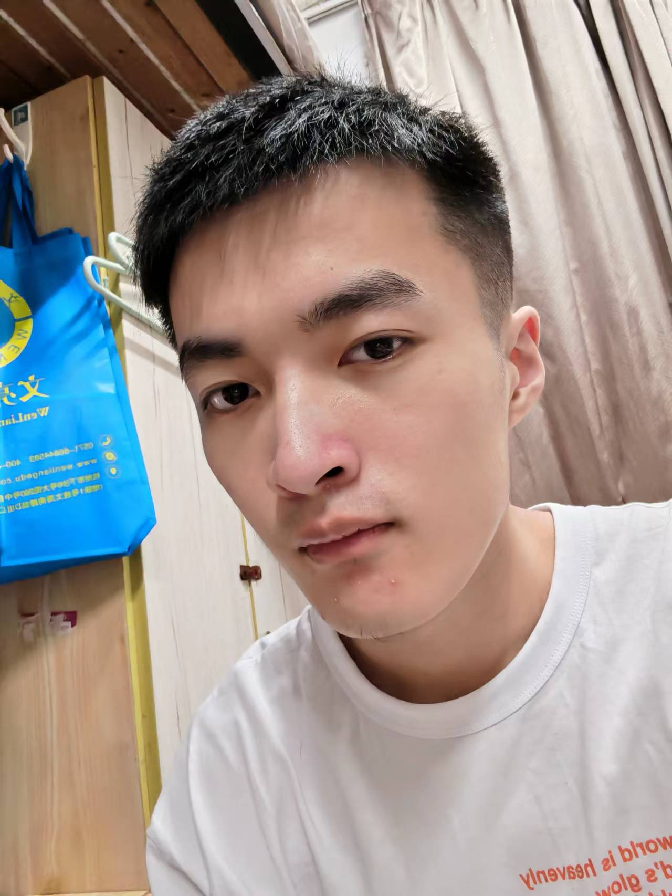
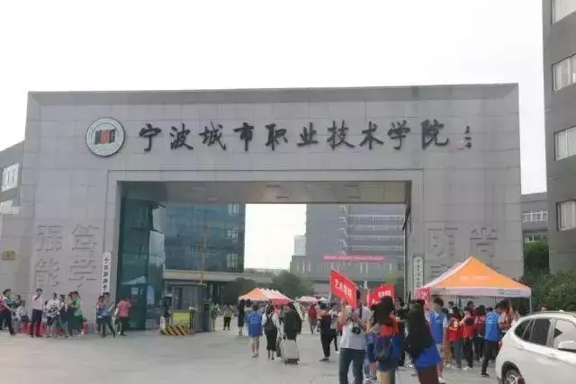

Student Self Introduction
 My Self Introduction
My name is Sumail and I am studying in NBCC. My major is IT, which is my dream major in high school, because I watched the documentary about the development of IT in high school, in which I was deeply impressed by the rapid development of Internet technology.
Welcome to my school web site. Everything you want to know about our school is in this web site.
Welcome to my personal webpage, where you will see a different me. My hobbies are reading books, playing basketball and occasionally playing video games. My plan for the future is to work in an Internet company as a programmer. This is my plan in recent years.